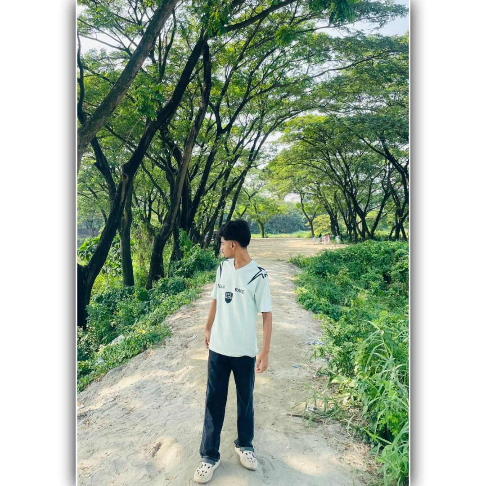

Welcome to my little corner of the internet. I'm a content creator sharing videos, gaming moments and creativity.
Explore MoreFind My Socials
A little introduction about the person behind Tᴏɴᴏʏ.
Hi! I'm Tonoy, a student and YouTube content creator from Bangladesh. I enjoy creating content, gaming and connecting with people. More about me will be added here.
Every creator has a story. This is where mine goes.
My content creation journey and the things I learn along the way.
My channel achievements and memorable moments will appear here.
New ideas, new videos and bigger goals.
Explore videos from my YouTube, TikTok, Instagram and Facebook in one place.
Some platforms do not allow every video to be displayed directly on another website. Individual public video posts can be embedded here when the platform permits it.
For creator or collaboration enquiries.
Find Me Online
Follow my public creator accounts.